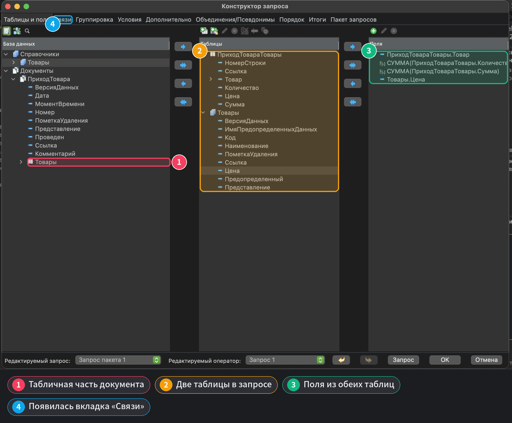
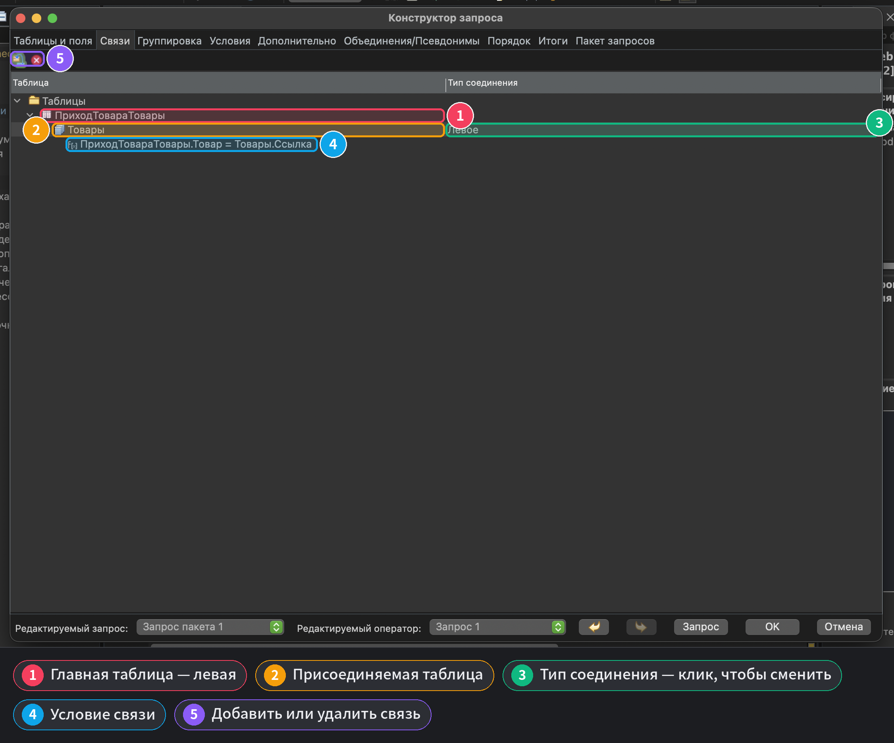
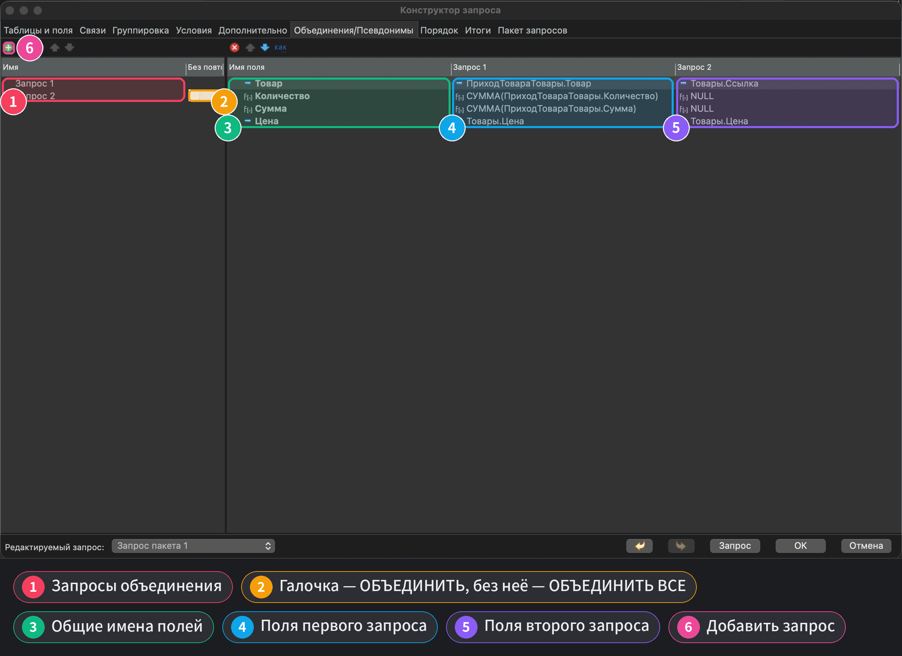
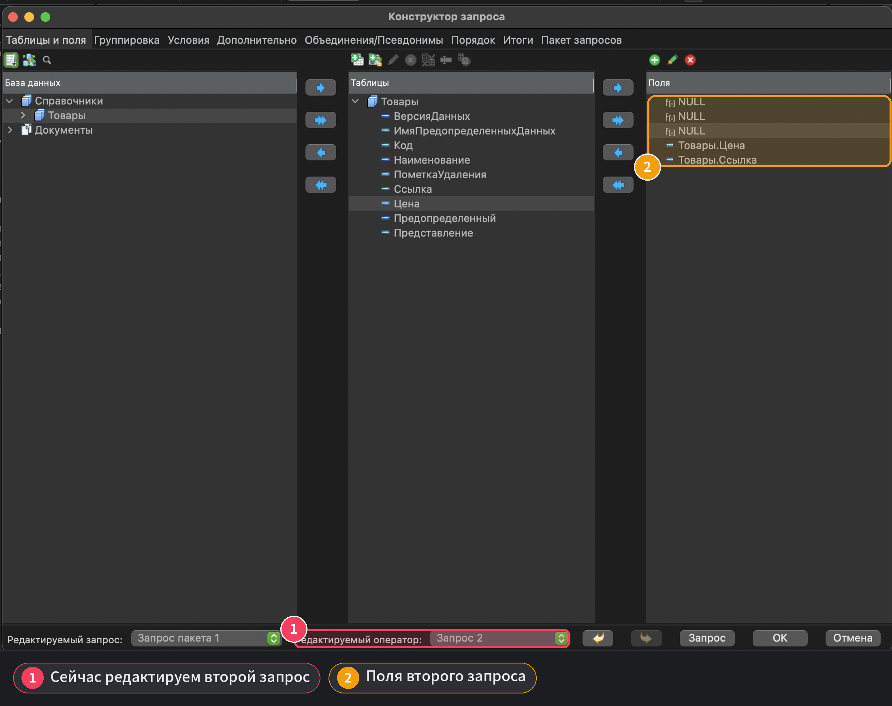
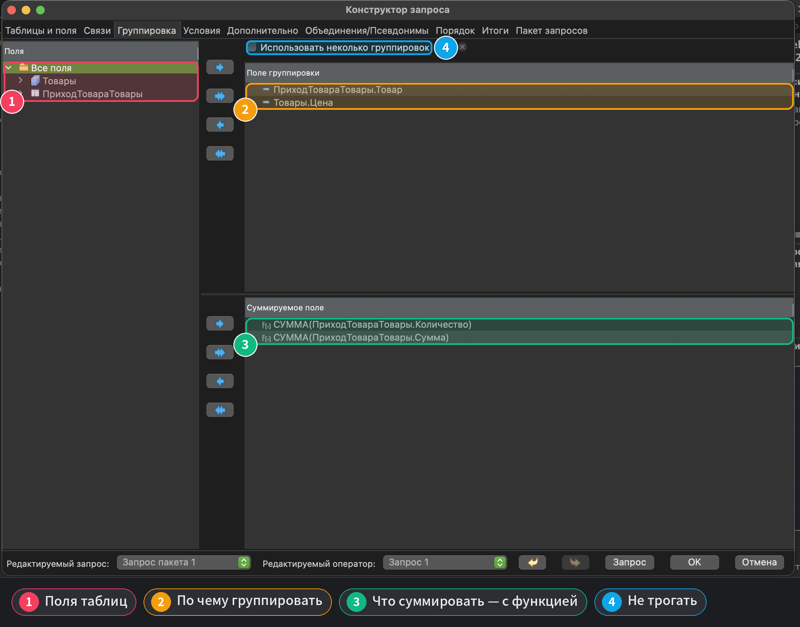
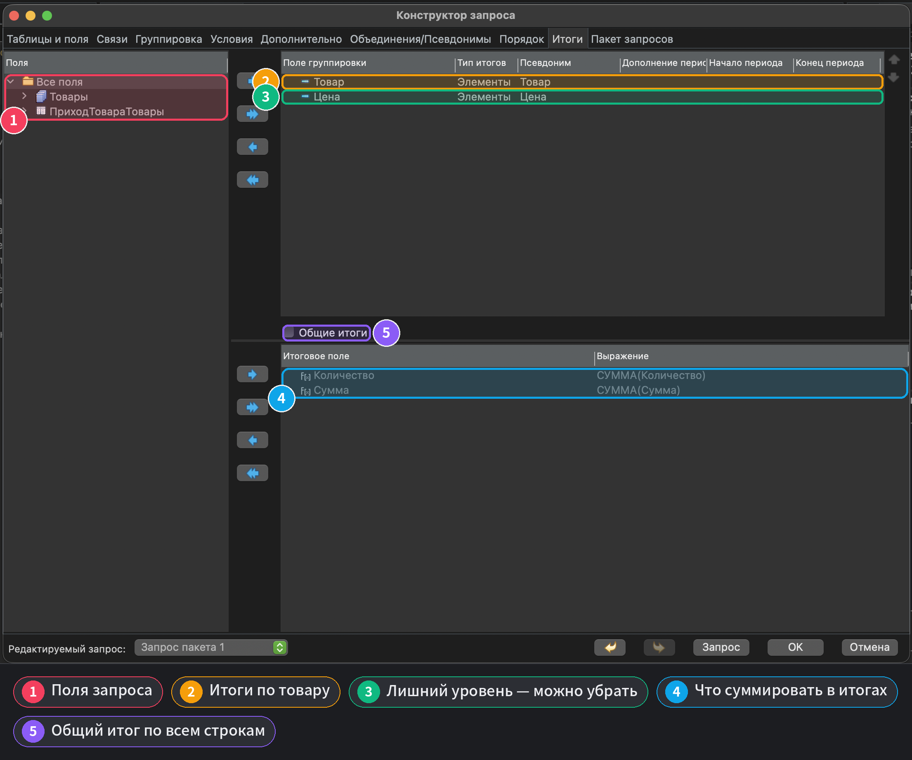
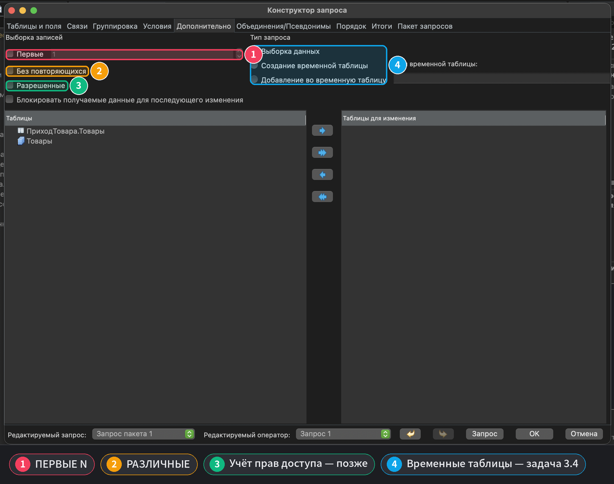
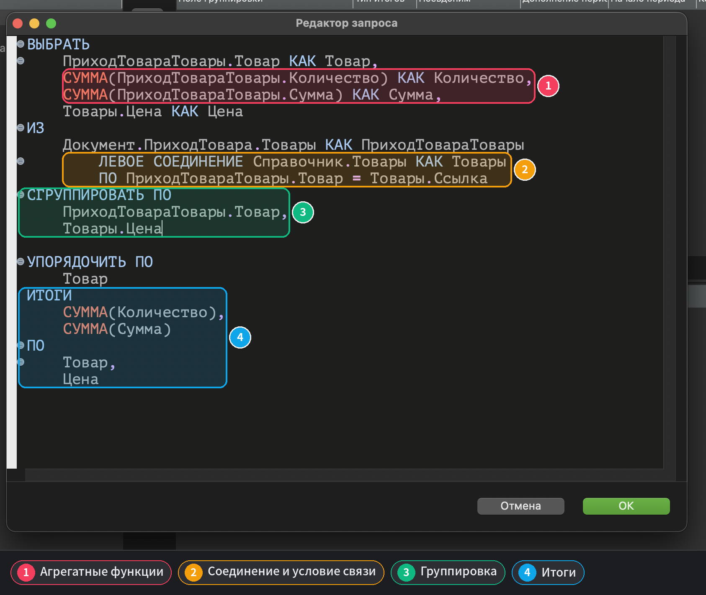

1. Что это, зачем, где найти
В задаче 3.1 запрос брал данные из одной таблицы. На практике почти всегда нужно больше: строки документа вместе с данными товара, приходы вместе с расходами, суммы по каждому товару.
| Приём | Что делает | Аналогия |
|---|---|---|
| Соединение | Склеивает строки двух таблиц в ширину: к строке накладной добавляет данные из карточки товара | К каждой строке накладной приложить карточку этого товара |
| Объединение | Складывает строки двух запросов в высоту: одни под другими | Положить одну стопку листов на другую |
| Группировка | Сворачивает строки с одинаковым ключом в одну и считает суммы | Свернуть у таблицы значений из главы 2 |
| Итоги | Добавляет к результату промежуточные суммы по группам | Подытоги в Excel |
Где. В тексте запроса — ключевые слова СОЕДИНЕНИЕ, ОБЪЕДИНИТЬ, СГРУППИРОВАТЬ ПО, ИТОГИ. В конструкторе — вкладки «Связи», «Объединения/Псевдонимы», «Группировка», «Итоги».
2. Соединения
Виды соединений
Возьмём две таблицы. Справочник «Товары»:
| Товар | Цена |
|---|---|
| Мышь | 500 |
| Ноутбук | 60 000 |
| Клавиатура | 1 500 |
Строки приходов:
| Документ | Товар | Количество |
|---|---|---|
| Приход 1 | Мышь | 10 |
| Приход 1 | Ноутбук | 2 |
| Приход 2 | Мышь | 5 |
«Клавиатуры» в приходах нет. Посмотрим, что даст каждое соединение справочника с приходами по товару.
Внутреннее — только строки, у которых пара нашлась в обеих таблицах:
| Товар | Количество |
|---|---|
| Мышь | 10 |
| Ноутбук | 2 |
| Мышь | 5 |
«Клавиатура» пропала — у неё нет пары.
Левое — все строки левой (первой) таблицы. Где пары нет — NULL:
| Товар | Количество |
|---|---|
| Мышь | 10 |
| Ноутбук | 2 |
| Мышь | 5 |
| Клавиатура | NULL |
| Соединение | Что попадает | Когда нужно |
|---|---|---|
ВНУТРЕННЕЕ |
Только строки с парой в обеих таблицах | Нужны данные, которые точно есть с обеих сторон. Работает и как фильтр |
ЛЕВОЕ |
Все строки левой таблицы + пары из правой | Левая таблица — главная, ни одна её строка не должна потеряться. Самое частое на практике |
ПРАВОЕ |
Все строки правой таблицы | То же, что левое, только наоборот. Почти не используют — меняют таблицы местами и пишут левое |
ПОЛНОЕ |
Все строки обеих таблиц | Сравнить две таблицы: что есть в одной, но нет в другой. Редко |
Как выбрать: спроси себя «могу ли я потерять строку главной таблицы?». Если нет — левое. Если строки без пары не нужны — внутреннее.
Как пишется
ВЫБРАТЬ
Товары.Ссылка КАК Товар,
ПриходТовараТовары.Количество КАК Количество
ИЗ
Справочник.Товары КАК Товары
ЛЕВОЕ СОЕДИНЕНИЕ Документ.ПриходТовара.Товары КАК ПриходТовараТовары
ПО Товары.Ссылка = ПриходТовараТовары.Товар
- Таблица в
ИЗ— левая, главная. - После
ЛЕВОЕ СОЕДИНЕНИЕ— присоединяемая, правая. - После
ПО— условие: какие строки считать парой. Обычно ссылка равна ссылке.
NULL и ЕСТЬNULL
Где пары нет, левое соединение подставляет NULL — «значения нет». Это не ноль: NULL + 5 даст NULL, а в выборке поле будет пустым.
Чтобы получить ноль, оборачивают поле в ЕСТЬNULL:
ЕСТЬNULL(ПриходТовараТовары.Количество, 0) КАК Количество
Читается так: «если значение NULL — подставь 0».
В конструкторе
Перенеси в среднюю колонку две таблицы: табличную часть «Товары» документа «ПриходТовара» и справочник «Товары». Поля — в правую колонку.

| № | Что это |
|---|---|
| 1 | Табличная часть лежит внутри документа: «Документы» → «ПриходТовара» → «Товары» |
| 2 | В запросе две таблицы. Конструктор называет табличную часть ПриходТовараТовары |
| 3 | Поля из обеих таблиц |
| 4 | Как только таблиц две, появляется вкладка «Связи» |
На вкладке «Связи» конструктор обычно сам находит связь по ссылке:

| № | Что это |
|---|---|
| 1 | Главная таблица — левая |
| 2 | Присоединяемая таблица |
| 3 | Тип соединения: «Левое», «Внутреннее», «Правое», «Полное». Клик по ячейке — сменить |
| 4 | Условие связи. Если конструктор не нашёл его сам или нашёл не то — добавь или исправь |
| 5 | Добавить или удалить связь |
Если связи нет, конструктор соединит таблицы «каждую строку с каждой». Из 100 товаров и 1000 строк приходов получится 100 000 строк. Всегда проверяй вкладку «Связи».
Короткий путь: поле через точку
Цену можно получить и без явного соединения:
ПриходТовараТовары.Товар.Цена КАК Цена
Платформа сама сделает соединение со справочником. Для одного-двух полей это нормально, но у такой записи есть подвох — разберём в задаче 3.6.
3. Объединение
Что это
Запросы пишутся один за другим через ОБЪЕДИНИТЬ, результат — их строки подряд.
ВЫБРАТЬ
Товары.Ссылка КАК Товар
ИЗ
Справочник.Товары КАК Товары
ГДЕ
Товары.Цена > 10000
ОБЪЕДИНИТЬ ВСЕ
ВЫБРАТЬ
Товары.Ссылка
ИЗ
Справочник.Товары КАК Товары
ГДЕ
Товары.Наименование ПОДОБНО "%мыш%"
ОБЪЕДИНИТЬ и ОБЪЕДИНИТЬ ВСЕ
ОБЪЕДИНИТЬ |
ОБЪЕДИНИТЬ ВСЕ |
|
|---|---|---|
| Одинаковые строки | Убирает повторы | Оставляет все |
| Скорость | Медленнее: базе нужно искать повторы | Быстрее |
| Когда | Нужен список без повторов | Почти всегда: суммы, движения, списки, где повторы важны |
По умолчанию пиши ОБЪЕДИНИТЬ ВСЕ. Без ВСЕ можно потерять данные: два одинаковых прихода по 5 мышей превратятся в один.
Правила объединения
- Одинаковое количество полей в каждом запросе. Если в каком-то поля нет — подставь
NULLили 0. - Имена полей берутся из первого запроса. Псевдонимы во втором можно не писать.
- Поля сопоставляются по порядку, а не по именам: первое с первым, второе со вторым.
УПОРЯДОЧИТЬ ПО— только один раз, в конце, после последнего запроса.
Типичный пример из типовых конфигураций: приходы с плюсом и расходы с минусом в одном запросе — получается движение товара.
В конструкторе
На вкладке «Объединения/Псевдонимы» зелёный «+» добавляет второй запрос. Конструктор переключится на него — на «Таблицах и полях» собираешь его как обычный. Потом возвращаешься и проверяешь, какое поле второго запроса стоит под каким полем первого.

| № | Что это |
|---|---|
| 1 | Список запросов объединения |
| 2 | Галочка «Без повторяющихся»: стоит — ОБЪЕДИНИТЬ, не стоит — ОБЪЕДИНИТЬ ВСЕ |
| 3 | Имена полей результата — из первого запроса |
| 4 | Поля первого запроса |
| 5 | Поля второго запроса. Клик по ячейке — выбрать, какое поле поставить. NULL — поля нет |
| 6 | Добавить ещё запрос |
Внизу окна видно, какой запрос сейчас редактируешь:

| № | Что это |
|---|---|
| 1 | «Редактируемый оператор: Запрос 2» — сейчас собираешь второй запрос |
| 2 | Поля второго запроса. NULL конструктор добавил сам, чтобы количество полей совпало с первым |
4. Группировка
Что это
СГРУППИРОВАТЬ ПО сворачивает строки с одинаковыми значениями в одну, а агрегатные функции считают по ним итог. Это Свернуть у таблицы значений, только на стороне базы.
ВЫБРАТЬ
ПриходТовараТовары.Товар КАК Товар,
СУММА(ПриходТовараТовары.Количество) КАК Количество,
СУММА(ПриходТовараТовары.Сумма) КАК Сумма
ИЗ
Документ.ПриходТовара.Товары КАК ПриходТовараТовары
СГРУППИРОВАТЬ ПО
ПриходТовараТовары.Товар
Из трёх строк приходов выше получится две: Мышь — 15, Ноутбук — 2.
Агрегатные функции
| Функция | Что считает |
|---|---|
СУММА(Поле) |
Сумму |
КОЛИЧЕСТВО(Поле) |
Сколько строк |
КОЛИЧЕСТВО(РАЗЛИЧНЫЕ Поле) |
Сколько разных значений. Например, в скольких документах был товар |
МАКСИМУМ(Поле) |
Наибольшее значение |
МИНИМУМ(Поле) |
Наименьшее значение |
СРЕДНЕЕ(Поле) |
Среднее |
Главное правило
Каждое поле в ВЫБРАТЬ — либо в СГРУППИРОВАТЬ ПО, либо внутри агрегатной функции. Иначе ошибка: база не знает, какое из значений группы показать.
| Поле | Что с ним делать |
|---|---|
| Ключ, по которому группируем: товар, склад | В СГРУППИРОВАТЬ ПО |
| То, что складывается: количество, сумма | СУММА |
| То, что одно на всю группу: цена товара, наименование | Тоже в СГРУППИРОВАТЬ ПО или МАКСИМУМ |
⚠️ Цену не суммируют. Если мышь была в трёх строках по 500, СУММА(Цена) даст 1500. Цена одна на товар — её в группировку.
ИМЕЮЩИЕ — условие на итог
ГДЕ отбирает строки до группировки, ИМЕЮЩИЕ — группы после.
СГРУППИРОВАТЬ ПО
ПриходТовараТовары.Товар
ИМЕЮЩИЕ
СУММА(ПриходТовараТовары.Количество) > 10
Только товары, которых пришло больше 10 штук. В ГДЕ так написать нельзя: на этом шаге сумм ещё нет.
В конструкторе

| № | Что это |
|---|---|
| 1 | Поля таблиц |
| 2 | Поля группировки — СГРУППИРОВАТЬ ПО. Сюда перенеси товар и цену |
| 3 | Суммируемые поля. Функция по умолчанию — СУММА, двойной клик по полю — сменить |
| 4 | «Использовать несколько группировок» — редкий случай, не трогай |
5. Итоги
Что это
ИТОГИ добавляет к результату дополнительные строки с суммами по группам. Результат становится многоуровневым: сначала строка-итог по товару, под ней — его детальные строки.
...
ИТОГИ
СУММА(Количество),
СУММА(Сумма)
ПО
ОБЩИЕ,
Товар
- После
ИТОГИ— что суммировать. - После
ПО— по каким полям строить уровни. ОБЩИЕ— ещё один итог по всем строкам сразу.
Где встречается. В отчётах итоги почти всегда считает СКД (глава 6), поэтому в запросах ИТОГИ пишут нечасто. Но в старом коде и печатных формах встретишь. Как обходить такой результат по уровням — задача 3.5.
В конструкторе

| № | Что это |
|---|---|
| 1 | Поля запроса |
| 2 | Поля группировки итогов — ПО. Здесь товар |
| 3 | Цена — лишний уровень: получатся итоги по товару, а внутри — ещё и по цене. Можно убрать |
| 4 | Итоговые поля — что суммировать |
| 5 | «Общие итоги» — ОБЩИЕ, итог по всем строкам |
Вверху — по чему считать итоги, внизу — что считать. Если перепутать — на вкладках появятся красные значки ошибок.
6. Вкладка «Дополнительно» и готовый текст

| № | Что это |
|---|---|
| 1 | «Первые» — ВЫБРАТЬ ПЕРВЫЕ N |
| 2 | «Без повторяющихся» — ВЫБРАТЬ РАЗЛИЧНЫЕ |
| 3 | «Разрешенные» — учёт прав доступа. Разберём в главе про роли |
| 4 | Тип запроса: временные таблицы — задача 3.4 |
Всё вместе — так выглядит текст, который получился:

| № | Блок |
|---|---|
| 1 | Агрегатные функции в ВЫБРАТЬ |
| 2 | Левое соединение и условие связи после ПО |
| 3 | СГРУППИРОВАТЬ ПО — товар и цена |
| 4 | ИТОГИ ... ПО |
7. Ловушки
- Условие на правую таблицу в
ГДЕпревращает левое соединение во внутреннее. Строки без пары имеютNULL, и условиеГДЕ Приход.Дата > &Датаих отбросит. Условие на присоединяемую таблицу пиши вПОвместе с условием связи. NULLпосле левого соединения. Не ноль и не пустая строка. Нужен ноль —ЕСТЬNULL(Поле, 0).- Нет связи на вкладке «Связи». Таблицы соединятся «каждая строка с каждой» — результат раздуется в разы.
- Поле не в группировке и не в агрегате. Запрос не выполнится.
- Суммирование цены. Цену — в группировку, суммировать только количество и суммы.
ОБЪЕДИНИТЬбезВСЕмолча склеит одинаковые строки. По умолчанию —ОБЪЕДИНИТЬ ВСЕ.
8. Практика А (30–60 минут)
А1. Левое и внутреннее соединение
Процедура &НаСервере в области Задания Песочницы.
- Создай товар «Тест 3.2», которого нет ни в одном приходе. Можно через свою
НайтиИлиСоздатьТовар. - Напиши запрос: все товары справочника и сколько всего каждого пришло по всем приходам. Выведи товар и количество.
- Запусти. «Тест 3.2» должен быть в списке с нулём, а не с пустым значением.
- Поменяй соединение на внутреннее и запусти снова. Куда пропал «Тест 3.2» и почему? Ответ — комментарием в коде.
- Верни левое.
Подсказки:
- Какая таблица главная, если в результате нужны все товары? Она — в
ИЗ. - Количество по всем приходам — это группировка. По какому полю группировать?
- Почему у «Тест 3.2» без
ЕСТЬNULLполучится пусто, а не 0?
9. Практика Б — проект
Б1. Сводка по товарам за период
В модуле менеджера документа «Приход товара» функция СводкаПоТоварам(Начало, Конец). Возвращает таблицу значений с колонками:
| Колонка | Что |
|---|---|
Товар |
Ссылка на товар |
Количество |
Сколько пришло за период |
Сумма |
На какую сумму |
Документов |
В скольких разных приходах был товар |
Требования:
- в результате все товары справочника без пометки удаления, даже если приходов за период не было — у них нули;
- учитываются только приходы за период и без пометки удаления;
- сортировка по сумме, от большей к меньшей;
- период — через параметры.
Подсказки:
- Главная таблица — справочник. Какое соединение?
- Как получить дату документа, если у тебя табличная часть? Вспомни: у строки табличной части есть поле
Ссылка— ссылка на документ. - Куда писать условие на дату и пометку удаления документа — в
ГДЕили вПО? Ответ — в ловушке 1. Документов— какая агрегатная функция считает разные значения?- Конец периода: если передать дату без времени, приходы этого дня после полуночи не попадут. Как это решить при вызове?
- Результат в таблицу значений —
Выгрузить().
Б2. Тесты — процедура ТестыСводкиПоТоварам() в области Тесты. Период — текущий день.
Подготовка: два тестовых товара — «Тест Б 3.2 без приходов» и «Тест Б 3.2». Два прихода через Документы.ПриходТовара.СоздатьПриходТовара: в первом «Тест Б 3.2» × 2, во втором × 3.
| Проверка | Ожидается |
|---|---|
| «Тест Б 3.2 без приходов» есть в результате | Истина |
Его Количество и Документов |
0 и 0 |
Количество у «Тест Б 3.2» |
5 |
Документов у «Тест Б 3.2» |
2 |
Период «вчера»: Количество у «Тест Б 3.2» |
0 |
Подсказка: найти строку товара в таблице значений — Найти(Товар, "Товар").
В конце пометь тестовые товары и приходы на удаление.
Коммит: Сводка по товарам за период и тесты. На ревью — текст запроса и скриншот тестов.
10. Справочник
Синтаксис соединений
ИЗ
ТаблицаА КАК А
ЛЕВОЕ СОЕДИНЕНИЕ ТаблицаБ КАК Б
ПО А.Ссылка = Б.Владелец
И Б.Дата МЕЖДУ &Начало И &Конец
В условии ПО можно писать несколько условий через И.
Слово ВНЕШНЕЕ можно опускать: ЛЕВОЕ ВНЕШНЕЕ СОЕДИНЕНИЕ и ЛЕВОЕ СОЕДИНЕНИЕ — одно и то же. Конструктор пишет короткий вариант.
Сравнение с SQL
| 1С | SQL |
|---|---|
ВНУТРЕННЕЕ СОЕДИНЕНИЕ |
INNER JOIN |
ЛЕВОЕ СОЕДИНЕНИЕ |
LEFT JOIN |
ПОЛНОЕ СОЕДИНЕНИЕ |
FULL JOIN |
ОБЪЕДИНИТЬ ВСЕ |
UNION ALL |
ОБЪЕДИНИТЬ |
UNION |
СГРУППИРОВАТЬ ПО |
GROUP BY |
ИМЕЮЩИЕ |
HAVING |
ЕСТЬNULL |
ISNULL / COALESCE |
Порядок блоков в запросе
ВЫБРАТЬ ...
ИЗ ... СОЕДИНЕНИЕ ... ПО ...
ГДЕ ...
СГРУППИРОВАТЬ ПО ...
ИМЕЮЩИЕ ...
ОБЪЕДИНИТЬ ВСЕ
ВЫБРАТЬ ...
УПОРЯДОЧИТЬ ПО ...
ИТОГИ ... ПО ...
Проверь себя
| Вопрос | Ответ |
|---|---|
| Чем левое соединение отличается от внутреннего? | Левое сохраняет все строки главной таблицы, внутреннее — только строки с парой |
| Что будет в полях правой таблицы, если пары нет? | NULL |
Как превратить NULL в ноль? |
ЕСТЬNULL(Поле, 0) |
Почему условие на правую таблицу не пишут в ГДЕ? |
Оно отбросит строки с NULL — левое станет внутренним |
Чем ОБЪЕДИНИТЬ отличается от ОБЪЕДИНИТЬ ВСЕ? |
Первое убирает повторы, второе оставляет все строки и работает быстрее |
| Какое правило у полей при группировке? | Каждое поле — в группировке или внутри агрегатной функции |
Чем ИМЕЮЩИЕ отличается от ГДЕ? |
ГДЕ — до группировки, ИМЕЮЩИЕ — по итогам групп |
Источники
- Синтакс-помощник EDT: «Язык запросов».